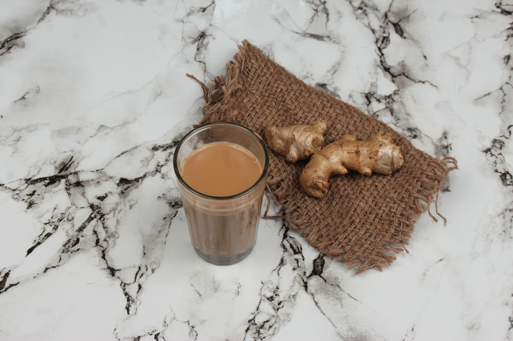

Ginger Tea
Home

Description
According to Sharmis Passions,Ginger Tea is an aromatic soothing concoction of freshly brewed tea with the flavour of ginger. Ginger Tea is a very popular Indian beverage that can be enjoyed with or without milk and can be made in less than 15 minutes. Ginger Tea is also known as Adrak chai or Adrakwali chai is a bliss & rejuvenates you mood and energy. Ginger tea can be had anytime and it is more soothing during winters.
Ingredients
- Ginger: Use fresh ginger for a more flavourful tea. Ginger should be peeled, cut into small pieces and then crushed with mortar and pestle.
- Cardamom : Crushed cardamom or cardamom powder is used for this recipe
- Milk: Milk is optional in Ginger Tea based on your preference. If you are using milk, toned regular milk is the best - however full cream milk also could be used. Use same quantity of milk that we had used water to make decoction.
Steps
- To begin with heat and boil water. Add crushed ginger and cardamom.
- Let it boil for few mins.
- Then add tea powder.
- Boil for 5 mins. Make tea decoction ready first.
- Afterwards add milk to it.
- Mix it well.
- Let the ginger tea come to rolling boil.
- Swirl the pan and add sugar. Then give a good mix.
- Allow for a quick short boil. However do not boil for more time at this stage otherwise it will alter the taste.
- Pour to strain. Finally strain and discard the remains. Adrak chai ready.
- Serve Ginger tea with biscuits, pakoras or any crispy snack!